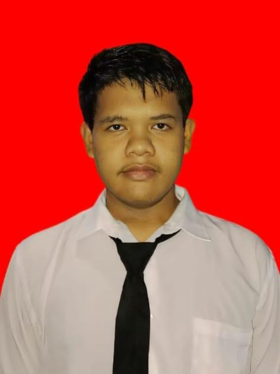
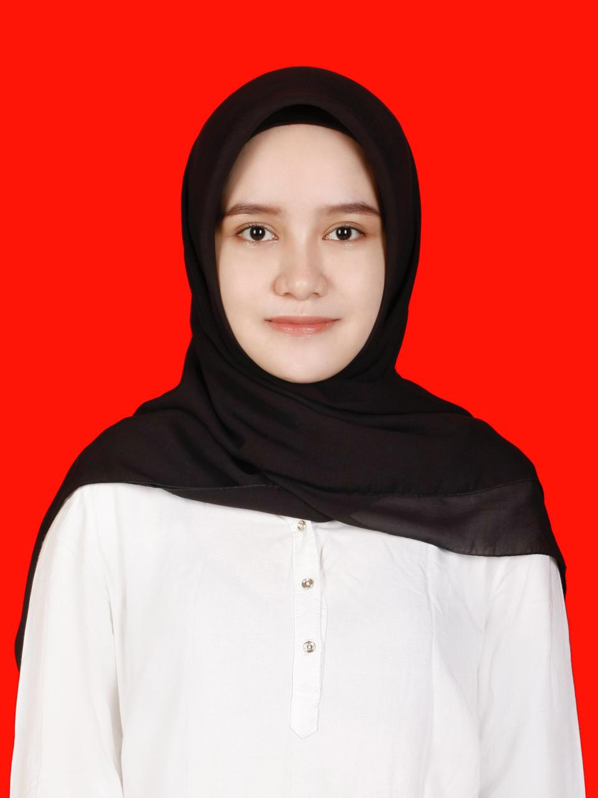
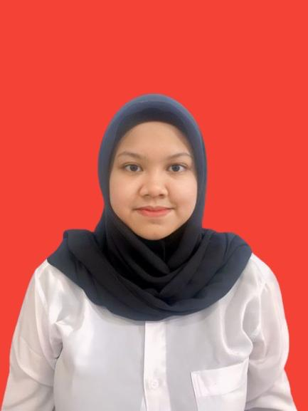
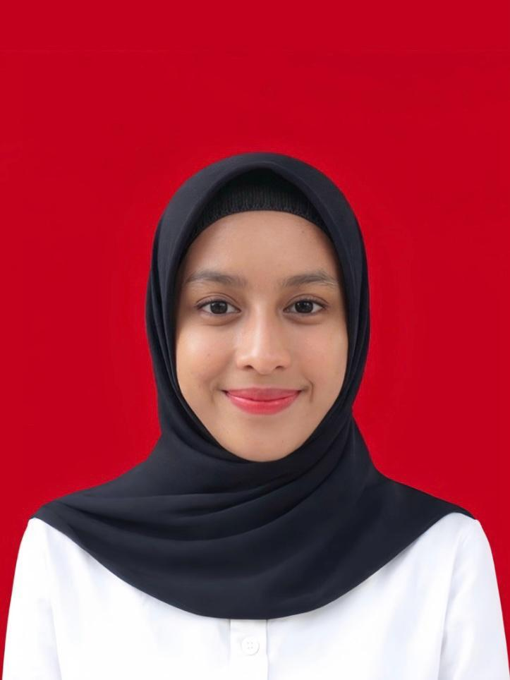
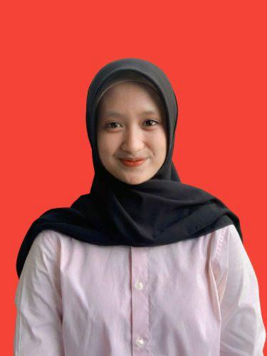

Mahasiswa Terapi Gigi UNHAS
8 Mahasiswa terapis gigi yang siap memberikan pelayanan terbaik untuk Anda di Makassar

Juan Ibnu Alrafi
Spesialisasi scaling dan penambalan gigi. Aktif dalam penelitian kesehatan gigi di UNHAS.

Aurelia Ramadhani
Ahli dalam perawatan anak dan fluoridasi. Ramah dan sabar dengan pasien anak-anak.
Putri Anastasya
Ahli dalam perawatan konservasi gigi dan penambalan estetik di Neyra Dental Care.

Mufidah Katrina M
Fokus pada perawatan preventif dan edukasi pasien. Ahli dalam komunikasi kesehatan gigi.

Dea Kalsum Z
Berpengalaman dalam scaling dan perawatan periodontal di klinik gigi Neyra.

Aisyah Putri Z
Ahli dalam edukasi kesehatan gigi dan promosi kesehatan untuk masyarakat Makassar.
Chelsea Olivia M
Bertanggung jawab atas sterilisasi dan kesiapan alat praktik di Neyra Dental Care.

Verawati
Mengatur jadwal pasien dan memastikan kenyamanan selama perawatan di klinik.